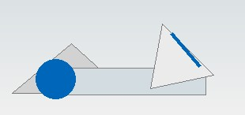

공사비 검색
대한민국 건물의 건물종류별, 지역별, 면적별, 연도별 면적당 공사비를 검색합니다.
→ MORE VIEW대한민국 건물의 건물종류별, 지역별, 면적별, 연도별 면적당 공사비를 검색합니다.
→ MORE VIEW건축 및 골조 내역서, 공사기간의 산정, 간접 공사비 계산 서비스를 제공합니다.
→ MORE VIEW건설공정 이야기와 동영상 교육을 통한 건축 수량 산출 및 내역서 작성 전문 교육을 영상하는 교육입니다.
→ MORE VIEW
건설 현장 각 자재거래와 구인·구직 등 건설인의 정보공터 입니다.
→ MORE VIEW☎ 02. 2202. 2258
▣ 02. 2202. 2259
▣ 24시간 접수가능
고객님의 문의와 건의사항을공사비닷컴은 지난 30년간 모아진 건축 데이터베이스와 축적된 기술 노하우를 바탕으로 국내 최대의 공사비 정보 플랫폼을 제공합니다.
인재와 품질을 통한 High Quality 실현이라는 경영이념 아래, 건설 원가 검토 및 산출 업무와 공사비 데이터 관리 분야의 표준을 만들기 위해 노력하고 있습니다.
정보의 홍수 속에서 정확하고 믿을 수 있는 데이터를 제공할 수 있는 공사비닷컴이 될 것을 약속드립니다.
대표이사 현 동 명
공사비닷컴은 “왜?”라는 질문에서 시작되었습니다.
왜 건설기능에는 믿을 수 있는 공사비의 표준이 없을까?
왜 원가검토는 공사 이전부터 준공 때까지 체계적인 관리가 어려울까?
이제 그 답을 향한 저희의 시작이 ‘공사비닷컴’입니다.
빅데이터를 활용하여 공사기간과 예산을 절감할 수 있습니다.
1내역서 작성과 공사비 산정에 필요한 정보를 체계적으로 제공합니다.
2정확성을 바탕으로 한 빅데이터를 활용하여 공사기간과 예산을 절감하여 줍니다.
시간과 비용이 많이 소요되는 내역서 작성을 10분만에 작성합니다.
신뢰할 수 있는 교육과 공사비의 표준을 제공합니다.
상표등록증 출원 04
개산견적 내역서 작성 OPEN 10
유튜브 채널 신설 “현동명의 공사비닷컴”
연구개발전담부서 인정 06
공사비닷컴 설립
ISO 인증
고객의 니즈를 이해하고 배려를 기반으로 소통할 수 있는 인재
오늘보다 더 나은 자신과 회사를 위해 끊임없이 도전하는 인재
시장과 고객의 변화를 항상 주시하고 선도할 수 있는 인재
개산견적의 프로그램
수정 및 개발
유무료 회원의
유치 및 관리
SNS 채널,
레터 관리 및 광고
기획, 인사/총무,
재무, 원가
| 지원분야 | 근무조건 및 복리후생 |
|---|---|
| 프로그램개발팀 영업팀 홍보팀 경영지원팀 | 근무형태 : 정규직 근무시간 : 주5일 09시~17시 복리후생 : 연차, 경조, 교육휴가 등 |
- 입사지원서
- 자기소개서 및 해당 직무 기술서
- 접수기한 : 상시채용
- 문의접수 : 이지선 / 02-2202-2258
| 번호 | 제목 | 작성일 |
|---|---|---|
| 2 | 공사비닷컴 신입사원 모집 | 2020-09-01 |
| 1 | 공사비닷컴 경력사원 모집 | 2020-09-01 |
지선 2311번 / 2412번 / 3012번 / 3214번 / 3317번 / 3318번 / 3413번
마을 강남05 / 16번 / 31번 / 32번 / 70번 / 101번 / 119번
간선 301번 / 302번 / 303번 / 320번 / 340번 / 350번 / 360번 / 362번 / N13번
8호선 석촌역 7번출구
9호선 석촌역 6번출구
※ 공사비닷컴에서 제공하는 서비스 및 자료는 참고용이므로
손실이나 손해에 관하여 법적책임을 지지 않습니다.
강의 콘텐츠와 교육 요청 화면은 추후 실제 자료로 교체합니다.
| 번호 | 제목 | 작성일 |
|---|---|---|
| 등록된 게시글이 없습니다. | ||